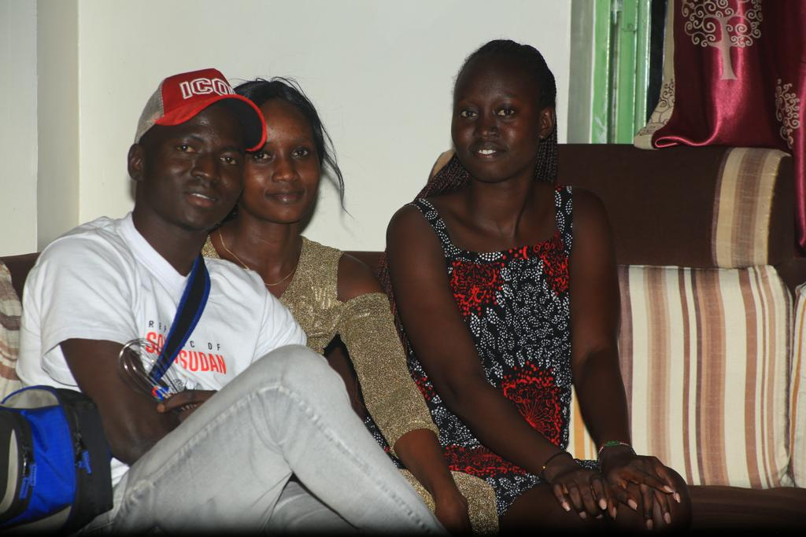
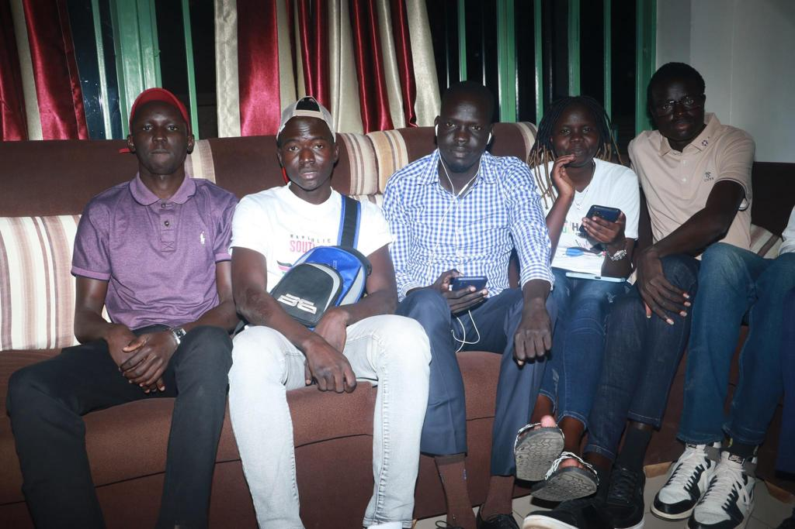

PROJECTS
WELCOME TO MY PROJECTS
Explore the latest projects I've been working on.
alu-AirBnB_clone_v2
This is my initial project to build a clone of the AirBnB website. This stage implements a backend interface or console, to manage program data. Console commands allow the user to create, update, and destroy objects, as well as manage file storage. Using a system of JSON serialization/deserialization, storage is persistent between sessions.
Link to GitHub repositoryMy Resume Site
This is my resume site showcasing my details including about me, skills, experiences, education, projects and the activities.
Link to GitHub repositoryalu-back-end
This is the backend part of the "alu" project, responsible for server-side operations such as data storage, request processing, and response generation.
Link to GitHub repositoryOur picture on Coming together day
This was the day we the South Sudanese came together.
This picture was taken on coming together day.
It was the funniest day ever.
Our video
This was the video I designed showcasing my editing skills.
This is my video taken at the campus
I was trying to model.